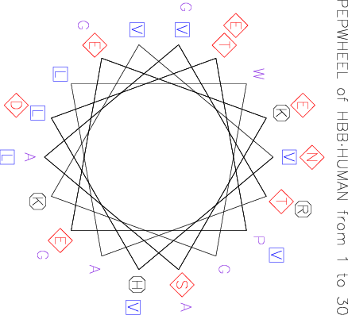

|
|
pepwheel |
Please help by correcting and extending the Wiki pages.
pepwheel draws a helical wheel diagram for a protein sequence. This displays the sequence in a helical representation as if looking down the axis of the helix. It is useful for highlighting amphipathicity and other properties of residues around a helix. By default, aliphatic residues are marked with squares, hydrophilic residues are marked with diamonds, and positively charged residues with octagons, although this can be changed.
% pepwheel tsw:hbb_human -send 30 Draw a helical wheel diagram for a protein sequence Graph type [x11]: cps Created pepwheel.ps |
Go to the input files for this example
Go to the output files for this example
Standard (Mandatory) qualifiers:
[-sequence] sequence Protein sequence filename and optional
format, or reference (input USA)
-graph graph [$EMBOSS_GRAPHICS value, or x11] Graph type
(ps, hpgl, hp7470, hp7580, meta, cps, x11,
tekt, tek, none, data, das, xterm, png, gif)
Additional (Optional) qualifiers (* if not always prompted):
-steps integer [18] The number of residues plotted per turn
is this value divided by the 'turns' value.
(Integer from 2 to 100)
-turns integer [5] The number of residues plotted per turn
is the 'steps' value divided by this value.
(Integer from 1 to 100)
* -squares string [ILVM] By default the aliphatic residues
ILVM are marked with squares. (Any string is
accepted)
* -diamonds string [DENQST] By default the residues DENQST are
marked with diamonds. (Any string is
accepted)
* -octags string [HKR] By default the positively charged
residues HKR are marked with octagons. (Any
string is accepted)
Advanced (Unprompted) qualifiers:
-[no]wheel boolean [Y] Plot the wheel
-amphipathic toggle If this is true then the residues ACFGILMVWY
are marked as squares and all other
residues are unmarked. This overrides any
other markup that you may have specified
using the qualifiers '-squares', '-diamonds'
and '-octags'.
Associated qualifiers:
"-sequence" associated qualifiers
-sbegin1 integer Start of the sequence to be used
-send1 integer End of the sequence to be used
-sreverse1 boolean Reverse (if DNA)
-sask1 boolean Ask for begin/end/reverse
-snucleotide1 boolean Sequence is nucleotide
-sprotein1 boolean Sequence is protein
-slower1 boolean Make lower case
-supper1 boolean Make upper case
-sformat1 string Input sequence format
-sdbname1 string Database name
-sid1 string Entryname
-ufo1 string UFO features
-fformat1 string Features format
-fopenfile1 string Features file name
"-graph" associated qualifiers
-gprompt boolean Graph prompting
-gdesc string Graph description
-gtitle string Graph title
-gsubtitle string Graph subtitle
-gxtitle string Graph x axis title
-gytitle string Graph y axis title
-goutfile string Output file for non interactive displays
-gdirectory string Output directory
General qualifiers:
-auto boolean Turn off prompts
-stdout boolean Write first file to standard output
-filter boolean Read first file from standard input, write
first file to standard output
-options boolean Prompt for standard and additional values
-debug boolean Write debug output to program.dbg
-verbose boolean Report some/full command line options
-help boolean Report command line options. More
information on associated and general
qualifiers can be found with -help -verbose
-warning boolean Report warnings
-error boolean Report errors
-fatal boolean Report fatal errors
-die boolean Report dying program messages
|
| Standard (Mandatory) qualifiers | Allowed values | Default | |
|---|---|---|---|
| [-sequence] (Parameter 1) |
Protein sequence filename and optional format, or reference (input USA) | Readable sequence | Required |
| -graph | Graph type | EMBOSS has a list of known devices, including ps, hpgl, hp7470, hp7580, meta, cps, x11, tekt, tek, none, data, das, xterm, png, gif | EMBOSS_GRAPHICS value, or x11 |
| Additional (Optional) qualifiers | Allowed values | Default | |
| -steps | The number of residues plotted per turn is this value divided by the 'turns' value. | Integer from 2 to 100 | 18 |
| -turns | The number of residues plotted per turn is the 'steps' value divided by this value. | Integer from 1 to 100 | 5 |
| -squares | By default the aliphatic residues ILVM are marked with squares. | Any string is accepted | ILVM |
| -diamonds | By default the residues DENQST are marked with diamonds. | Any string is accepted | DENQST |
| -octags | By default the positively charged residues HKR are marked with octagons. | Any string is accepted | HKR |
| Advanced (Unprompted) qualifiers | Allowed values | Default | |
| -[no]wheel | Plot the wheel | Boolean value Yes/No | Yes |
| -amphipathic | If this is true then the residues ACFGILMVWY are marked as squares and all other residues are unmarked. This overrides any other markup that you may have specified using the qualifiers '-squares', '-diamonds' and '-octags'. | Toggle value Yes/No | No |
ID HBB_HUMAN Reviewed; 147 AA.
AC P68871; A4GX73; B2ZUE0; P02023; Q13852; Q14481; Q14510; Q45KT0;
AC Q549N7; Q6FI08; Q6R7N2; Q8IZI1; Q9BX96; Q9UCD6; Q9UCP8; Q9UCP9;
DT 21-JUL-1986, integrated into UniProtKB/Swiss-Prot.
DT 23-JAN-2007, sequence version 2.
DT 16-JUN-2009, entry version 76.
DE RecName: Full=Hemoglobin subunit beta;
DE AltName: Full=Hemoglobin beta chain;
DE AltName: Full=Beta-globin;
DE Contains:
DE RecName: Full=LVV-hemorphin-7;
GN Name=HBB;
OS Homo sapiens (Human).
OC Eukaryota; Metazoa; Chordata; Craniata; Vertebrata; Euteleostomi;
OC Mammalia; Eutheria; Euarchontoglires; Primates; Haplorrhini;
OC Catarrhini; Hominidae; Homo.
OX NCBI_TaxID=9606;
RN [1]
RP NUCLEOTIDE SEQUENCE [GENOMIC DNA].
RX MEDLINE=77126403; PubMed=1019344;
RA Marotta C., Forget B., Cohen-Solal M., Weissman S.M.;
RT "Nucleotide sequence analysis of coding and noncoding regions of human
RT beta-globin mRNA.";
RL Prog. Nucleic Acid Res. Mol. Biol. 19:165-175(1976).
RN [2]
RP NUCLEOTIDE SEQUENCE [GENOMIC DNA].
RX MEDLINE=81064667; PubMed=6254664; DOI=10.1016/0092-8674(80)90428-6;
RA Lawn R.M., Efstratiadis A., O'Connell C., Maniatis T.;
RT "The nucleotide sequence of the human beta-globin gene.";
RL Cell 21:647-651(1980).
RN [3]
RP NUCLEOTIDE SEQUENCE [GENOMIC DNA], AND VARIANT LYS-7.
RX PubMed=16175509; DOI=10.1086/491748;
RA Wood E.T., Stover D.A., Slatkin M., Nachman M.W., Hammer M.F.;
RT "The beta-globin recombinational hotspot reduces the effects of strong
RT selection around HbC, a recently arisen mutation providing resistance
RT to malaria.";
RL Am. J. Hum. Genet. 77:637-642(2005).
RN [4]
RP NUCLEOTIDE SEQUENCE [GENOMIC DNA].
RA Lu L., Hu Z.H., Du C.S., Fu Y.S.;
RT "DNA sequence of the human beta-globin gene isolated from a healthy
RT Chinese.";
RL Submitted (JUN-1997) to the EMBL/GenBank/DDBJ databases.
RN [5]
RP NUCLEOTIDE SEQUENCE [GENOMIC DNA], AND VARIANT ARG-113.
RA Cabeda J.M., Correia C., Estevinho A., Cardoso C., Amorim M.L.,
RA Cleto E., Vale L., Coimbra E., Pinho L., Justica B.;
RT "Unexpected patterns of globin mutations in thalassemia patients from
RT north of Portugal.";
[Part of this file has been deleted for brevity]
FT VARIANT 141 141 A -> V (in Puttelange; polycythemia; O(2)
FT affinity up).
FT /FTId=VAR_003082.
FT VARIANT 142 142 L -> R (in Olmsted; unstable).
FT /FTId=VAR_003083.
FT VARIANT 143 143 A -> D (in Ohio; O(2) affinity up).
FT /FTId=VAR_003084.
FT VARIANT 144 144 H -> D (in Rancho Mirage).
FT /FTId=VAR_003085.
FT VARIANT 144 144 H -> P (in Syracuse; O(2) affinity up).
FT /FTId=VAR_003087.
FT VARIANT 144 144 H -> Q (in Little Rock; O(2) affinity
FT up).
FT /FTId=VAR_003086.
FT VARIANT 144 144 H -> R (in Abruzzo; O(2) affinity up).
FT /FTId=VAR_003088.
FT VARIANT 145 145 K -> E (in Mito; O(2) affinity up).
FT /FTId=VAR_003089.
FT VARIANT 146 146 Y -> C (in Rainier; O(2) affinity up).
FT /FTId=VAR_003090.
FT VARIANT 146 146 Y -> H (in Bethesda; O(2) affinity up).
FT /FTId=VAR_003091.
FT VARIANT 147 147 H -> D (in Hiroshima; O(2) affinity up).
FT /FTId=VAR_003092.
FT VARIANT 147 147 H -> L (in Cowtown; O(2) affinity up).
FT /FTId=VAR_003093.
FT VARIANT 147 147 H -> P (in York; O(2) affinity up).
FT /FTId=VAR_003094.
FT VARIANT 147 147 H -> Q (in Kodaira; O(2) affinity up).
FT /FTId=VAR_003095.
FT CONFLICT 26 26 Missing (in Ref. 15; ACD39349).
FT CONFLICT 42 42 F -> L (in Ref. 13; AAR96398).
FT HELIX 6 16
FT TURN 21 23
FT HELIX 24 35
FT HELIX 37 42
FT HELIX 44 46
FT HELIX 52 57
FT HELIX 59 77
FT TURN 78 80
FT HELIX 82 94
FT TURN 95 97
FT HELIX 102 119
FT HELIX 120 122
FT HELIX 125 142
FT HELIX 144 146
SQ SEQUENCE 147 AA; 15998 MW; A31F6D621C6556A1 CRC64;
MVHLTPEEKS AVTALWGKVN VDEVGGEALG RLLVVYPWTQ RFFESFGDLS TPDAVMGNPK
VKAHGKKVLG AFSDGLAHLD NLKGTFATLS ELHCDKLHVD PENFRLLGNV LVCVLAHHFG
KEFTPPVQAA YQKVVAGVAN ALAHKYH
//
|

The number of residues plotted per turn is the specified "steps" value (-steps) divided by the specified "turns" value (-turns).
The default settings for turn (5) and steps (18) apply to alpha helices. For other possible secondary structures, see the following table:
helix phi psi omega res/turn transl. turns steps alpha -57 -47 180 3.6 1.50 5 18 3-10 -49 -26 180 3.0 2.00 1 3 pi -57 -70 180 4.4 1.15 5 22 PP I -83 158 0 3.33 1.9 3 10 PP II -78 149 180 3.0 3.12 1 3 PG II -80 150 180 3.0 3.1 1 3 anti Beta -139 135 -178 2.0 3.4 4 9 para Beta -119 113 180 2.0 3.2 4 9 PP is polyproline PG II is polyGlycine.
When you specify the number of turns and steps, be aware that you should remove common factors from these two numbers. For example, if you (for some improbable reason) wished to plot a wheel with 8 turns in 18 steps (2.25 residues per turn) you should remove the common factor (i.e. 2) and specify 4 turns in 9 steps.
| Program name | Description |
|---|---|
| abiview | Display the trace in an ABI sequencer file |
| cirdna | Draws circular maps of DNA constructs |
| garnier | Predicts protein secondary structure using GOR method |
| helixturnhelix | Identify nucleic acid-binding motifs in protein sequences |
| hmoment | Calculate and plot hydrophobic moment for protein sequence(s) |
| lindna | Draws linear maps of DNA constructs |
| pepcoil | Predicts coiled coil regions in protein sequences |
| pepnet | Draw a helical net for a protein sequence |
| prettyplot | Draw a sequence alignment with pretty formatting |
| prettyseq | Write a nucleotide sequence and its translation to file |
| remap | Display restriction enzyme binding sites in a nucleotide sequence |
| seealso | Finds programs with similar function to a specified program |
| showalign | Display a multiple sequence alignment in pretty format |
| showdb | Displays information on configured databases |
| showfeat | Display features of a sequence in pretty format |
| showpep | Displays protein sequences with features in pretty format |
| showseq | Displays sequences with features in pretty format |
| sixpack | Display a DNA sequence with 6-frame translation and ORFs |
| textsearch | Search the textual description of sequence(s) |
| tmap | Predict and plot transmembrane segments in protein sequences |